Executive Summary
이번 주의 가장 강한 VNAND 메시지는 lateral charge migration을 결과(VTH retention loss)로만 보지 말고 transport coefficient와 local field의 문제로 직접 측정·설계해야 한다는 것입니다. Applied Physics Reviews 연구는 hole injection path와 lateral migration path를 분리한 test vehicle을 사용해 Si3N4 CTL 내 hole diffusivity를 직접 추출했고, Poole-Frenkel 형태와 약 2.47 eV의 effective hole trap depth를 보고했습니다.
POSTECH/Samsung의 open-access 연구는 3D NAND residual stress를 mechanical concern이 아니라 CTN band-edge와 thermally assisted charge loss를 바꾸는 reliability knob로 제시합니다. SNU 연구의 charge-ring은 positive charge로 CTL lateral field를 낮춰 hole migration을 줄이는 구조입니다. HV 쪽에서는 GaN MIS-HEMT의 trapped/free hole 분리와 SiC MOSFET의 temperature-dependent trap competition이 공통적으로 “관측 ΔVTH = 하나의 defect population”이라는 단순화를 경고합니다.
| # | Topic | Reported novelty | Engineering value |
|---|---|---|---|
| 1 | Direct CTL hole migration | Direct diffusivity extraction; PF-like behavior; ~2.47 eV trap depth | Material metric instead of only long retention ΔVTH |
| 2 | Residual-stress modulation | Higher CTN compression improves retention; 10 nm SEL best balance among studied splits | Mechanical stress becomes reliability design variable |
| 3 | Charge-ring VNAND | VTH stability +42%/+35%; program efficiency +17% | Electrostatic suppression without full CTL segmentation |
| 4 | GaN dynamic DIBL | Trapped and free hole contributions separated | Transient space charge vs permanent damage separation |
| 5 | SiC DGS trap competition | Four DUTs show different temperature trends including sign crossover | Single-Ea extrapolation can fail |
1. Direct observation of lateral hole migration in Si3N4 CTL
기존 VNAND retention은 vertical detrapping, lateral transport, recombination, read/channel state가 섞입니다. 이 논문의 장점은 주입 위치와 감지 위치를 분리해 “멀리 이동한 hole”을 직접 관찰한다는 점입니다.
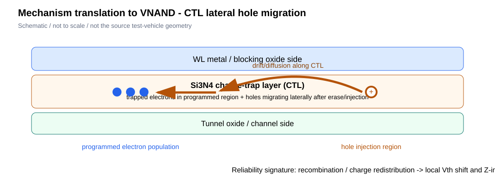
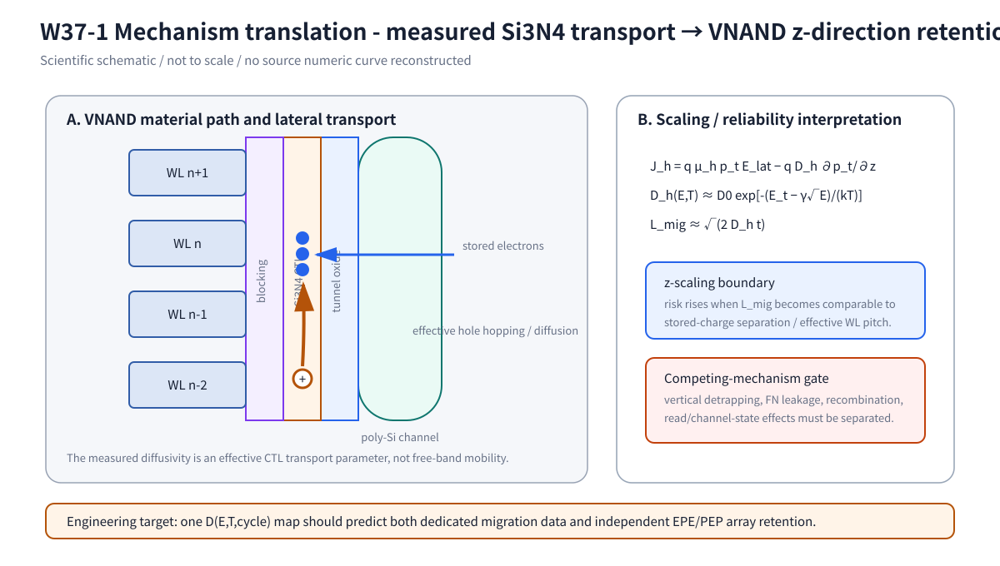
Figure interpretation
Fig. 1A에서 먼저 보아야 할 것은 “hole이 이동했다”는 결론보다 주입 위치와 remote sensing 위치를 분리한 측정 논리입니다. 따라서 drain 부근 FN/tunneling 성분을 보정한 뒤에도 remote ΔVTH·ΔVGIDL가 누적되어야 lateral migration 주장이 강해집니다. Fig. 1B는 이 measured transport를 VNAND z-direction으로 옮긴 것으로, Lmig 자체보다 Lmig/PWL이 scaling boundary라는 점을 보여줍니다.
첫 항은 field-driven drift, 둘째 항은 concentration-gradient diffusion입니다. 실제 CTL의 μ와 D는 band mobility가 아니라 repeated trapping/de-trapping/hopping을 포함하는 effective transport parameter입니다.
따라서 scaling 경계는 절대 retention time보다 L_mig/P_WL로 보는 것이 유용합니다. pitch가 줄어 L_mig가 adjacent stored-charge region까지 도달하면 lateral migration이 first-order failure mode가 됩니다.
2. Residual stress modulation as a retention knob
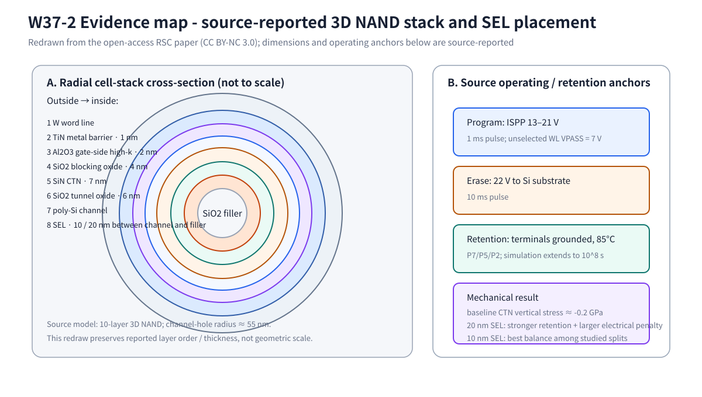
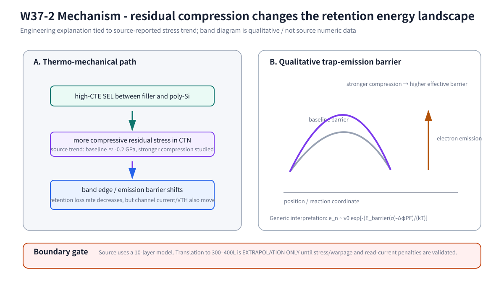
Figure interpretation
Fig. 2A는 SEL이 임의의 outer spacer가 아니라 poly-Si channel과 SiO₂ filler 사이에 놓인다는 점과, retention 이득이 실제 gate stack·channel electrostatics와 분리되지 않는다는 점을 명확히 합니다. Fig. 2B에서 중요한 것은 stress가 retention을 직접 “막는” 것이 아니라 band edge와 emission barrier를 바꾸고 그 항이 exponential rate에 들어간다는 것입니다. 동시에 read-current/VTH penalty가 커지면 system optimum은 역전됩니다.
이 식은 물리 해석용 generic form입니다. stress가 barrier에 영향을 주고 barrier가 exponential term에 들어가므로, 작은 band-edge 변화도 high-T retention에 큰 차이를 만들 수 있습니다. 그러나 같은 stress가 poly-Si channel mobility와 read current도 바꾸므로 “retention만 좋아지는 최적화”는 제품 최적화가 아닙니다.
3. Charge-ring VNAND: electrostatic suppression of lateral migration
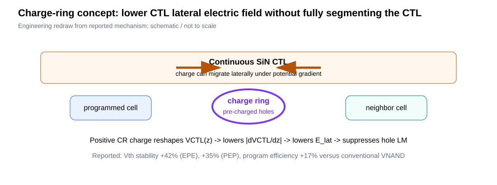
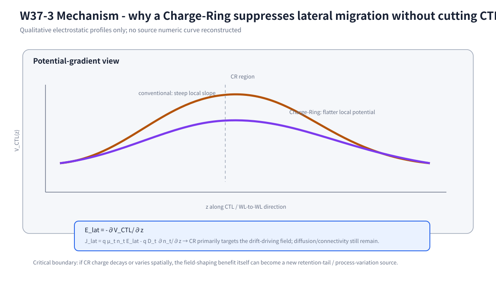
Figure interpretation
이 구조를 segmented CTL처럼 읽으면 안 됩니다. 핵심은 continuous CTL의 connectivity가 남은 상태에서 positive CR charge가 local potential gradient |∂VCTL/∂z|를 낮춘다는 것입니다. 따라서 drift term은 낮아질 수 있지만 diffusion term과 CR-charge stability는 별도의 reliability state로 남습니다.
Segmentation은 lateral connectivity를 끊는 접근이고, charge-ring은 V_CTL(z)를 reshape해 driving field 자체를 낮추는 접근입니다. 이 차이는 program slope와 process complexity trade-off를 비교할 때 중요합니다.
4. Hole-generation-triggered dynamic DIBL in RF GaN MIS-HEMTs
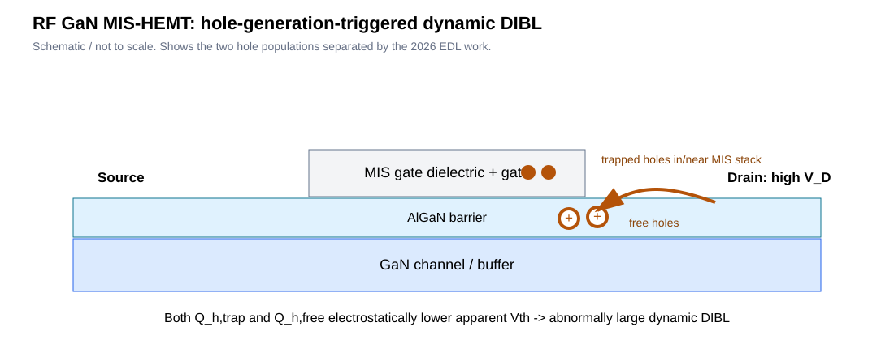
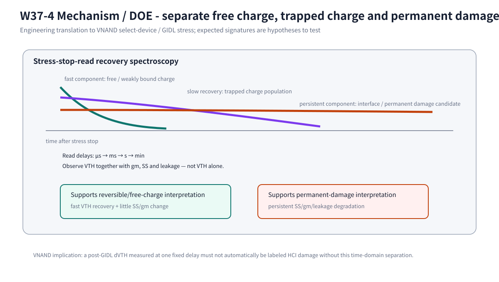
Figure interpretation
Fig. 4A의 핵심은 두 hole population이 공간적으로도, 시간상으로도 같지 않다는 점입니다. 따라서 Fig. 4B처럼 read delay를 바꾸면서 VTH뿐 아니라 gm·SS·leakage를 같이 측정해야 합니다. 이 논리는 VNAND GIDL/select-device stress 직후의 ΔVTH를 곧바로 permanent HCI로 해석하지 않기 위한 검증 gate로 사용할 수 있습니다.
관측 VTH에는 permanent/slow trap charge와 transient space charge가 동시에 들어갈 수 있습니다. VNAND select/GIDL stress에서도 stress 직후 ΔVTH를 모두 permanent HCI로 보면 lifetime을 과소평가할 수 있고, 전부 recoverable로 보면 실제 damage를 놓칠 수 있습니다.
5. SiC MOSFET DGS: temperature-dependent trap competition
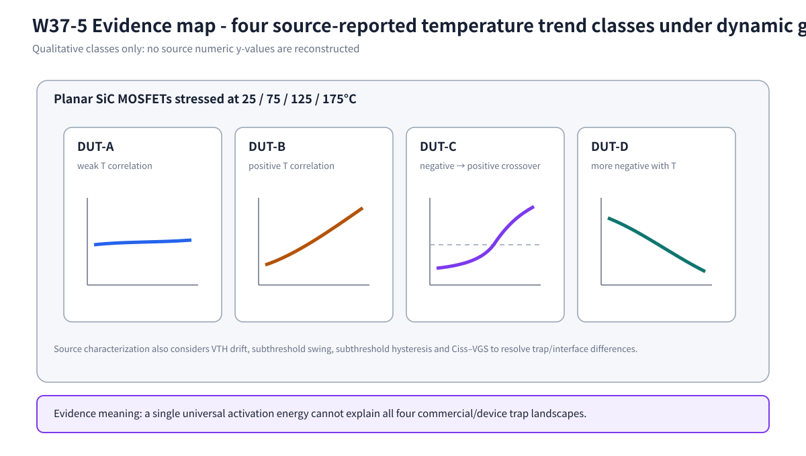
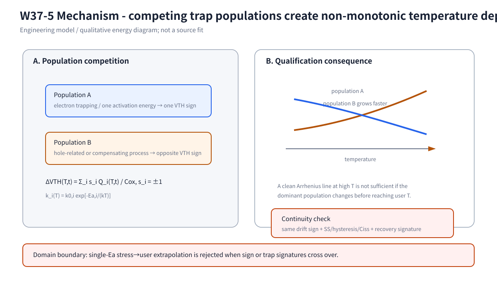
Figure interpretation
기존처럼 하나의 매끈한 curve를 그리면 실제 source evidence보다 더 많은 정보를 만든 셈이 됩니다. 그래서 Fig. 5A는 trend class만 보존했습니다. Fig. 5B는 그 class를 설명하기 위한 최소 competing-population model이며, high-T에서 얻은 하나의 Ea를 user-T까지 적용하려면 drift sign과 SS/hysteresis/Ciss/recovery signature가 유지되는지를 먼저 확인해야 합니다.
각 trap population이 VTH를 다른 방향으로 움직이고 서로 다른 activation energy를 갖기 때문에 net drift가 monotonic할 필요가 없습니다. 따라서 175°C accelerated data에서 얻은 single effective E_a를 cold/room user condition에 그대로 적용하면 mechanism crossover를 놓칠 수 있습니다.
Cross-paper synthesis: the hidden state is the reliability state
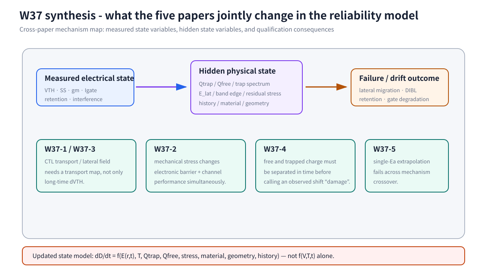
Priority DOE: CTL migration transport map
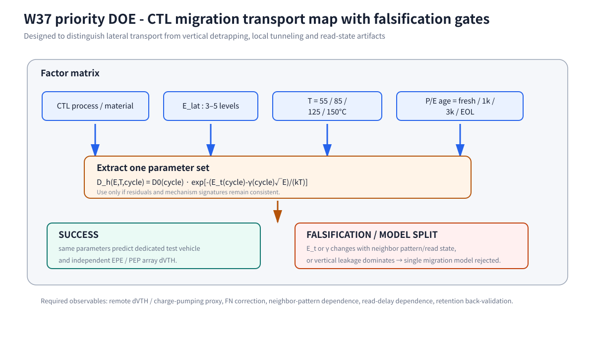
| Factor | Split | Purpose |
|---|---|---|
| CTL process/material | baseline + composition/anneal | D0 / trap spectrum |
| Lateral field | 3-5 calibrated levels | PF field acceleration γ |
| Temperature | 55 / 85 / 125 / 150°C | effective activation / trap depth |
| P/E age | fresh / 1k / 3k / EOL | wear evolution |
| Validation | EPE / PEP | array back-validation |
Success criterion은 하나의 D(E,T,cycle) model이 dedicated migration과 independent array-level ΔVTH를 동시에 설명하는 것입니다. Failure criterion은 extracted parameter가 neighbor pattern/read state에 따라 크게 흔들리는 경우입니다.
Technical & Figure QC Summary
PASS
PASS
PASS
PASS
PASS
PENDING FINAL RENDER
publication gate pending render